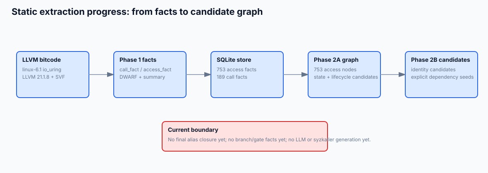
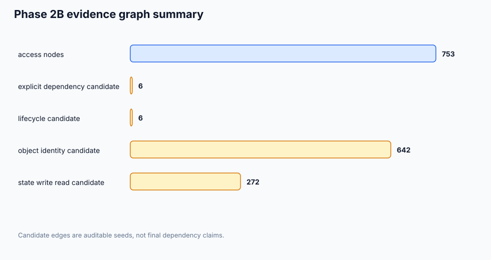
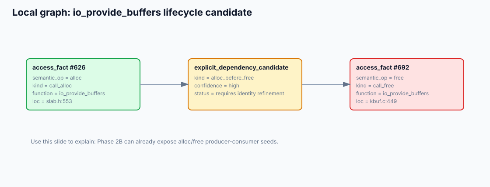
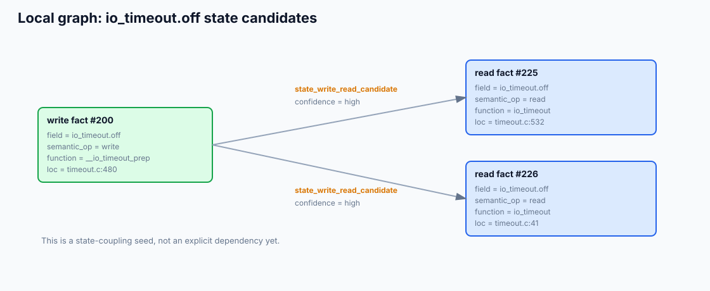
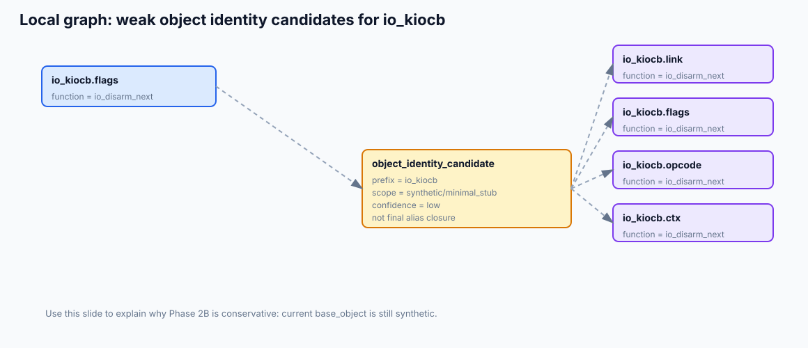

ImplicitFuzz 静态抽取层阶段汇报
主题：为什么选择 LLVM IR + SVF，以及当前从静态事实抽取到候选证据图的实现进展
汇报定位：不是最终系统演示，而是说明关键地基已经打通，后续可以进入对象身份 refinement、门控分支抽取和执行验证。
1. 研究背景：为什么需要静态抽取层
课题关注的是内核模糊测试中的隐式依赖。显式依赖通常表现为文件描述符、句柄、返回值等接口层资源流； 隐式依赖则隐藏在内核对象内部状态中，例如前序调用写入某个对象字段，后续调用虽然参数上没有直接消费前序返回值， 但能否走到深层分支却取决于这些内部字段是否被正确设置。
这类依赖很难只靠 syzkaller 的语法描述或覆盖率反馈解决。比较操作数提示能帮助修参数，但它无法回答： “应该插入哪个前序调用来改变某个内核对象字段”，也无法表达“前序调用的参数和后续调用参数之间应满足怎样的跨调用对齐关系”。
2. 调研结论：为什么选择 LLVM IR + SVF
2.1 只做源码文本或 AST 不够
Linux 内核大量依赖宏、内联函数、条件编译、结构体嵌套和函数指针。源码文本扫描可以定位模式，但很难稳定回答跨函数值流和别名问题。 Clang AST 能看见类型和语法结构，但一旦进入跨函数传递、函数指针调用、宏展开后的指针运算，仍需要更底层的数据流表示。
2.2 直接用二进制也不合适
二进制分析能贴近最终执行形态，但字段名、结构体类型、宏调用位置等语义信息会大幅丢失。我们的目标不是单纯恢复控制流， 而是要得到“对象字段级”的可解释证据，因此需要保留尽可能多的类型和源码位置信息。
2.3 LLVM IR 是比较合适的中间层
LLVM IR 既保留了源码编译后的真实控制流、调用、load/store/GEP 等低层操作，又能通过 debug info 关联回源码位置和 DWARF 类型信息。
对内核而言，使用 LLVM=1 和真实 .cmd 编译命令生成 bitcode，可以避免手写复杂内核编译参数。
2.4 SVF 提供值流和指针分析底座
选择 SVF 的核心原因是它已经提供 LLVM IR 上成熟的 SVFIR、Andersen 指针分析、调用图、ICFG/SVFG 等基础设施。 我们不需要从头实现跨函数值流和 points-to 分析，而是在 SVF 的事实基础上实现自己的 access-path 符号化、primitive summary 和证据落库。
| 方案 | 优点 | 为什么不是主线 |
|---|---|---|
| 源码文本/规则扫描 | 实现快，适合找 API 模式 | 跨函数值流、别名和宏展开后指针运算很弱 |
| Clang AST | 类型和语法结构清楚 | 难以覆盖优化后 IR 形态、跨函数 points-to 和 SVFG |
| KLEE/SyzSpec 类符号执行 | 能恢复结构和约束 | 成本重，适合作为后续约束恢复，不适合作为第一层事实抽取底座 |
| 二进制分析 | 贴近最终执行 | 字段名、源码位置、结构体语义损失大 |
| LLVM IR + SVF | 兼顾真实 IR、debug info、值流/指针分析 | 当前主线，工程上已经跑通 |
3. 当前总体路线
当前实现已经从“能抽取事实”推进到“能把事实组织成候选证据图”。下面这张图可以作为组会里的主线图： 我们先从内核 bitcode 抽取结构化 facts，再导入 SQLite，随后派生出候选图边。

讲解建议：强调当前边界。我们已经完成事实抽取和候选证据图，但还没有做最终 alias closure、branch/gate fact、LLM 推断和 syzkaller 生成。
4. 当前实现进度总览

讲解建议：这里的数量不是最终依赖数量，而是候选证据数量。尤其 642 条 identity candidate 是弱候选，后续还需要 alias refinement 和执行验证。
4.1 Phase 1：静态事实抽取层
| 能力 | 当前状态 |
|---|---|
| LLVM 21.1.8 + SVF 链路 | 已跑通，SVF commit 为 9e04f986 |
call_fact / access_fact |
已输出 JSONL，并通过 schema validation |
| DWARF 字段符号化 | 已支持普通 struct GEP 和 i8 byte-offset GEP |
| BTF cross-check | 已完成 smoke，case1/case2 offset match |
| primitive summary | 已覆盖 alloc/free/usercopy/refcount/percpu_ref 等第一批语义 |
| wrapper propagation | tiny case 已完成，kernel wrapper 暂缓 |
| SQLite ingestion | 已完成，当前导入 753 access_fact + 189 call_fact |
4.2 Phase 2A / 2B：候选证据图
| 边类型 | 含义 | 当前数量 |
|---|---|---|
state_write_read_candidate |
同一 symbolic field 先写后读，是状态耦合候选，不是显式依赖 | 272 |
lifecycle_candidate |
alloc/free 在局部上下文中成对出现，仍需对象身份 refinement | 6 |
object_identity_candidate |
同函数、同 bitcode、同 symbolic object prefix 的弱同对象候选 | 642 |
explicit_dependency_candidate |
目前仅来自 alloc-before-free 生命周期候选 | 6 |
5. 局部案例 1：生命周期候选依赖
第一个例子来自 io_uring/kbuf.c 中的 io_provide_buffers。
抽取器识别到了分配和释放语义，Phase 2B 将生命周期候选提升为 explicit_dependency_candidate。

io_provide_buffers 中 alloc/free 形成的显式依赖候选。讲解建议：这张图说明目前已经能从 primitive summary 中抽出生命周期语义，并把它组织成候选 producer-consumer 边。 但仍然标注为 candidate，因为真正对象身份还没有做 alias closure。
6. 局部案例 2：字段状态耦合候选
第二个例子是 io_timeout.off。
在 timeout.c:480 处有写入，在后续路径中有读取。这个关系不是显式资源依赖，而是对象字段状态的先后耦合。

io_timeout.off 写后读形成的状态候选边。
讲解建议：这里要强调纪律：write -> read 不直接等价于显式依赖。
它只是后续 branch/gate 分析要使用的状态候选证据。
7. 局部案例 3：弱对象身份候选
第三个例子展示 io_kiocb 相关字段。Phase 2B 会把同一函数内共享 symbolic object prefix 的访问组织成
object_identity_candidate，但当前底层 base_object 仍多为 synthetic stub，因此这些边都是低置信候选。

io_kiocb 字段之间的弱对象身份候选。讲解建议：这张图适合向老师说明“为什么我们现在不声称 final dependency”。 当前只是把可能同属一个对象的字段访问拉到一起，后续还要靠 alias fact、entry context 和执行验证收紧。
8. 当前验证结果
Phase 1 regression: tiny facts: 66 timeout facts: 341 cancel facts: 142 kbuf facts: 393 BTF smoke: match [phase1] ALL PASS SQLite ingestion: access_fact = 753 call_fact = 189 Phase 2B graph smoke: access nodes = 753 state_write_read_candidate = 272 lifecycle_candidate = 6 object_identity_candidate = 642 explicit_dependency_candidate = 6 Python tests: 15 passed
9. 当前边界和下一步
object_identity_candidate 仍是弱候选，不能当成最终 alias 结果。
还没有完成的关键项
alias_fact的真实 SVF points-to 产出。entry_fact，尤其是 io_uring worker、task_work、completion、timeout/cancel 等异步入口。branch_fact/gate_seed_fact，用于定位目标状态门控分支。- 对象身份闭包和显式依赖的最终确认。
- LLM 受限判读、syzkaller 映射和执行反馈。
建议下一阶段
- 优先做
branch_fact/gate_seed_fact的最小闭环，选一个具体 io_uring 深层分支作为目标。 - 补充对象身份 refinement，至少把 allocation/global/formal_param/synthetic 的边界真正利用起来。
- 在证据图上做一次小规模人工审计，评估当前 candidate precision。
- 之后再引入 LLM，只让它在证据库切片内做受限判读。
10. 组会讲解顺序建议
- 先讲问题：隐式依赖隐藏在内核对象字段状态中。
- 再讲调研结论：为什么需要 LLVM IR + SVF，而不是源码规则或重型符号执行直接上。
- 展示图 1：说明整体工程路线已经从 bitcode 跑到候选证据图。
- 展示图 2：说明当前规模和候选边类型。
- 展示图 3：说明生命周期显式依赖候选。
- 展示图 4：说明字段状态耦合候选。
- 展示图 5：说明对象身份候选仍是弱候选，所以后续要做 refinement。
- 最后讲下一步：branch/gate seed 和对象身份 refinement。